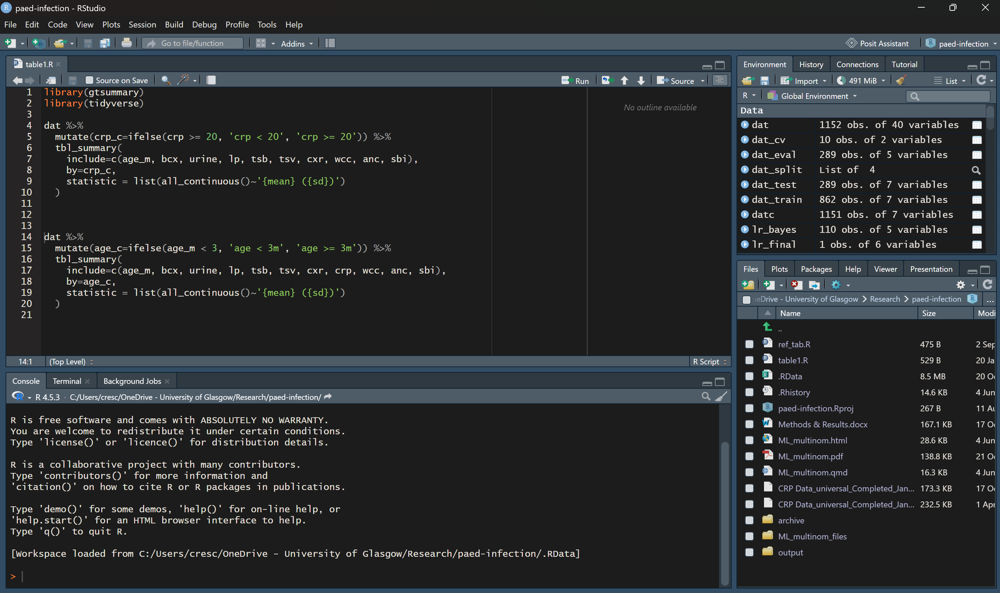
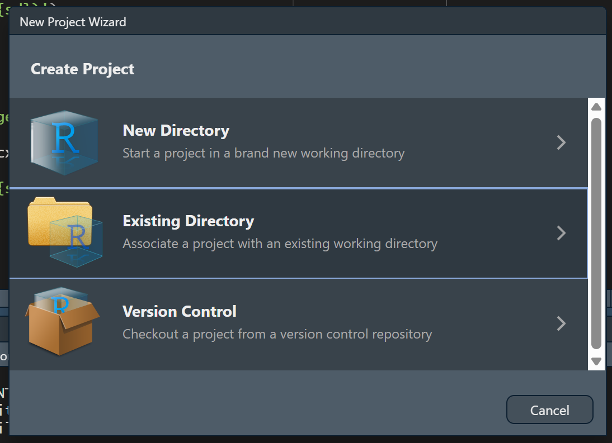

options(width = 76)1 R and R Studio (IES Week 4)
This is a preparatory chapter to learn about the basics of R, and the RStudio interface. It will cover what a script is, how to create things in R, and how to read the handful of error messages we’ll all meet in the next ten weeks. Nothing here is about statistics yet, but these are an important foundation for applying statistical analysis to data.
1.1 Chapter intended learning outcomes
By the end of this session you will be able to:
- Install R and RStudio on your own device, and verify the installation by running code and loading a package
- Work in RStudio using a Project and a saved script, and explain why we script rather than work in the console
- Create objects by assignment, and recognise R’s basic data types and structures (numeric, character, logical, factor; vector, data frame)
- Call a function using named arguments, explain what a default value is, and find its help page
- Write and read a short piped sequence that includes a logical condition and extracts a column from a data frame
- Diagnose a failed line of code from its error message
- Build a project folder, following sensible file and folder naming conventions
1.2 Setup
There’s no data to read yet, so this chapter’s setup chunk is almost empty. The one thing we set is the console’s print width, so that printed output stays narrow enough to fit this book’s page. That’s a setting for producing the book, not part of any analysis, and from Week 7 onward we keep it out of sight rather than opening every chapter with it. You don’t need it in your own scripts.
1.3 Installing R and RStudio
R is the programming language itself, and is the software program that actually runs your code. RStudio is a separate, free program that sits on top of R and makes it far nicer to work in: a proper editor, a console, and the panes we look at next. Install R first, then RStudio, in that order. You can use R without RStudio (even though it’s harder for a beginner) but not the other way round.
Installing R. Go to https://cran.r-project.org and choose the download link for your operating system, “Download R for Windows” or “Download R for macOS.” For most people, you can run the installer and accept every default option.
Installing RStudio. Go to https://posit.co/download/rstudio-desktop/ and download the free RStudio Desktop installer for your operating system. Run it the same way, accepting the defaults throughout.
Verification. Installed isn’t the same as working, so check before moving on. Open RStudio, type 2 + 2 into the console, the panel where typed commands run, covered properly in a moment, and press Enter. You should see [1] 4. Then confirm a package installs and loads too: run install.packages("dplyr") once, then library(dplyr). Both get a proper explanation later in this chapter, under Packages; for now, just check that neither throws an error. If anything here fails, get it fixed before going on, since nothing later in this chapter works without it.
1.4 Finding your way around RStudio
1.4.1 The four panes
RStudio’s window is split into four panes. Where each one sits is consistent no matter what you’re doing, so it’s worth learning the layout by position, not just by name.
- Top-left: the source pane. This only shows when you have an active script, so you most likely won’t see this in RStudio out of the box. This is where you write and save scripts, the
.Rfiles that hold everything worth keeping. Code typed here doesn’t run on its own; you have to tell RStudio to run it, which is the next thing we cover. - Bottom-left: the console. This is where code actually executes, one line at a time, and where its output appears. You can type directly into the console, but anything typed there is gone once you close RStudio, which is exactly why the source pane exists.
- Top-right: the environment pane. This lists every object that currently exists in your R session, its type, and a preview of its contents. Every time you create something, it appears here. When something you expected to see isn’t listed, that’s usually the first clue something went wrong.
- Bottom-right: a tabbed pane. This holds the file browser, the plot viewer, the list of installed packages, and the help viewer, one tab each.

1.4.2 Building a project folder
Working with R means you have to manage at least a couple of files, most likely some data files and an R script file. It is usually a good idea to put them into a ‘project folder’. Pick somewhere sensible on your machine, for example inside Documents. Create a new folder there and give it a short, sensible name, for example ies_mph, following the naming habit we’ll use for every file and folder in this course from here on: no spaces, no &, #, or %, consistent case, and a date written as YYYY-MM-DD if a name needs one, so files sort in the right order. Inside that folder, create three subfolders: data, for anything you read in; scripts, for the .R files you write; and outputs, for anything you save out, a plot or a table. Keeping these three separate means you always know where to look for something later, in this course and beyond it. This folder structure isn’t compulsory, just a suggestion. We’d still recommend sticking with it throughout the course, just to build the habit. Once you’re more familiar with R and RStudio, feel free to work with whatever folder structure works for you.
1.4.3 Creating an RStudio Project
An RStudio Project turns that folder into something RStudio understands directly, which is what makes relative paths work rather than having to type a full path every time.
- In RStudio’s menu, go to File → New Project…
- Choose Existing Directory, since the folder already exists.
- Browse to the project folder you just built, and click Create Project.
- RStudio reopens with that folder as the working directory. You can confirm this by checking the Files pane, bottom-right, which now shows the folder’s contents, and the title bar, which now shows the project’s name.

A Project’s working directory is the folder R treats as “here” when it looks for a file. Once we start reading data in Week 5, this is what lets a path like data/mph_nhanes_20241107.csv work on any machine, no matter where the project folder actually sits on that machine’s disk.
1.4.4 Console versus script
You can type a line directly into the console and press Enter, and it runs immediately. That’s fine for a quick check, but it isn’t saved anywhere. Close RStudio, and it’s gone.
For anything worth keeping, we write it in a script in the source pane instead, then run it from there:
- Ctrl+Enter (Windows) or Cmd+Return (Mac) runs the single line the cursor is on, or a selected block of lines, and sends it to the console.
- Highlighting several lines and pressing the same shortcut runs all of them in order.
- The Source button, top-right of the source pane, runs the entire script from top to bottom.
The reason this course insists on scripts rather than the console is simple: you will need to do this again, and you will not remember exactly what you typed. A saved script is a record you, or anyone else, can rerun from scratch and get the same result. That’s the whole idea behind reproducible work, and it’s why every exercise in this book asks you to write and save a script rather than work directly in the console.
1.5 Objects and assignment
R creates an object by assigning a value to a name, using <-:
age <- 45
age[1] 45age now holds the value 45. It appears in the Environment pane, top right, and stays there for the rest of the session, or until you overwrite it by assigning something else to the same name.
= looks similar, but does a different job. Inside the parentheses of a function call, = doesn’t create an object at all. It names which argument of the function a value belongs to:
round(x = 3.14159, digits = 2)[1] 3.14Here, x = 3.14159 doesn’t create an object called x. It tells round() that 3.14159 is the value for its x argument. Outside a function call, = can actually be used for assignment too, the same way <- can. This course always writes <- for assignment and keeps = for naming arguments inside a function call, so the two jobs stay visually distinct rather than looking identical on the page.
1.6 Vectors and a first look at data frames
c() combines several values into one object, called a vector:
ages <- c(45, 62, 38, 71)
ages[1] 45 62 38 71A vector holds one type of value, several at once. A data frame holds several vectors side by side, as columns, which is the structure this course actually works with from the next chapter onward. Building one from two vectors previews what’s coming:
smoker <- c("No", "Yes", "No", "Yes")
toy_data <- data.frame(ages, smoker)
toy_data ages smoker
1 45 No
2 62 Yes
3 38 No
4 71 YesNote that both vectors have to have the same length of data (4 values each), otherwise R will complain when you create a data frame.
1.7 Data types
R keeps track of what kind of value an object holds. class() reports it:
class(45)[1] "numeric"class("Yes")[1] "character"class(TRUE)[1] "logical"class(factor(c("Yes", "No")))[1] "factor"Four types matter throughout this course:
- numeric: a number, like 45
- character: text, like
"Yes", always in quotes - logical:
TRUEorFALSE - factor: a set of categories. It looks like text but is stored with a fixed, known list of possible categories behind it. Week 7 turns six columns of
nhanes_mphinto factors, exactly this way, against the dictionary file.
1.8 Functions and arguments
A function is a machine to process something. Most functions take some input, process it, and output it. In the example below, round() is a function to round numeric values. Note that a function is always followed by a pair of parentheses ().
A function takes different arguments, basically the inputs the machine runs on. A function’s arguments can be matched two ways: by position, in the order the function expects them, or by name, in any order at all.
round(3.14159, 2)[1] 3.14round(3.14159, digits = 2)[1] 3.14round(digits = 2, x = 3.14159)[1] 3.14All three lines return the same result. The first matches purely by position: round()’s first argument is x, its second is digits. The second and third name digits explicitly, so its position in the call no longer matters, which is why the third line can put digits before x without changing the answer.
The examples above simply run the function, so the output is shown in the console. If you’re going to reuse the output later, you’ll have to save it, the same way as the assignment above:
x <- round(3.14159, 2)
x * 2[1] 6.28Some arguments have a default: a value the function uses automatically if you don’t supply one.
readings <- c(10, 12, NA, 15)
mean(readings)[1] NAmean(readings, na.rm = TRUE)[1] 12.33333readings has one missing value, NA, out of four. mean()’s na.rm argument defaults to FALSE, so by default a single missing value makes the whole result NA, exactly as the first line shows. Setting na.rm = TRUE tells mean() to drop that one missing value first, then average the three that remain. We’ll meet na.rm constantly from here on, and it always means exactly this: drop the missing values before calculating, and be clear about how many were dropped.
1.9 Comparison and logical operators
These build a condition that’s either TRUE or FALSE for each value in a vector, which is what every filter() from Week 7 onward runs on:
ages > 50[1] FALSE TRUE FALSE TRUEages == 45[1] TRUE FALSE FALSE FALSEages != 45[1] FALSE TRUE TRUE TRUE! negates a condition, & combines two conditions and requires both to be true, and %in% tests whether each value appears anywhere in a set:
!(ages > 50)[1] TRUE FALSE TRUE FALSEages > 50 & ages < 70[1] FALSE TRUE FALSE FALSEages %in% c(45, 71)[1] TRUE FALSE FALSE TRUE1.10 Packages
Everything used so far, c(), class(), round(), mean(), comes built into R itself. Most of what this course does lives in add-on packages instead: dplyr for manipulating data, ggplot2 for plotting, and others still to come. Getting a package ready to use is two separate actions. Installing downloads it onto this computer, once. Loading, with library(), makes its functions available in the current R session, and has to be done again every time you start a fresh session, even though you never need to install the same package twice.
Installing is typically a one-off, run in the console rather than saved in a script: install.packages("dplyr"). Loading is what actually goes in a script, since every script that uses dplyr needs it loaded first:
library(dplyr)Loading a package sometimes prints a short message, often about functions it’s replacing from another package. It’s suppressed here since it doesn’t matter yet, but don’t be alarmed if you see one later in the course. It’s routine, not an error.
1.11 $ versus select()
$ pulls a single column out of a data frame, as a plain vector:
toy_data$smoker[1] "No" "Yes" "No" "Yes"select(), from dplyr, keeps a column too, but keeps it inside a data frame:
select(toy_data, smoker) smoker
1 No
2 Yes
3 No
4 YesThe values are the same either way. The difference is the container. toy_data$smoker is four bare values with nothing else attached. select(toy_data, smoker) is still a data frame, one column wide, four rows long. This matters practically from Week 8 onward: some functions, like t.test(), want a bare vector and expect $. Most of dplyr, starting in Week 7, works on data frames throughout and expects select().
1.12 Quoting rules and backticks
Text values need quotes. Numbers, TRUE/FALSE, and the names of objects or columns don’t:
class(45)[1] "numeric"class("45")[1] "character"45 is a number. "45" is text that happens to look like a number, and class() treats them completely differently. The same logic applies to object and column names: writing ages refers to the vector we created earlier, but writing "ages" is just the four-letter word.
A column name containing a space needs a different kind of quoting mark entirely: backticks, not quotation marks.
toy <- data.frame(`patient id` = c(1, 2, 3), check.names = FALSE)
toy$`patient id`[1] 1 2 3Backticks aren’t easy to work with, and generally it’s not recommended to have variable names containing a space. data.frame() normally cleans up column names automatically, turning a space into a dot. check.names = FALSE switches that off, purely so this example can show a genuine spaced name. When we read a CSV file with read_csv() in Week 5, column names come in exactly as written, spaces and all, with no automatic cleanup. Its dictionary file has a column literally called Variable names, and backticks are exactly how we’ll refer to it.
1.13 The pipe
|> takes what’s on its left and feeds it in as the first input to what’s on its right. Read it aloud as “and then”:
c(16, 25, 36) |> sqrt() |> sum()[1] 15Take these three numbers, and then take the square root of each, and then add up what’s left. Written without the pipe, the same calculation reads inside-out: sum(sqrt(c(16, 25, 36))). The pipe exists so a sequence of steps can be read in the order they actually happen, which is how every multi-step dplyr sequence in this book, starting in Week 7, is written.
There is a keyboard shortcut for the pipe: Ctrl+Shift+M (Windows) or Cmd+Shift+M (Mac). You’ll likely write a lot of pipes, so it’s worth remembering.
It’s also worth knowing that %>% is the older pipe, and is only available once you’ve loaded the dplyr package. Practically, both pipes can be treated the same.
1.14 Reading errors
You will encounter a lot of errors when you work with R, and that’s normal. Even a very experienced R user will encounter errors. The skill worth building now is reading the message rather than panicking at it. R, by way of the rlang package installed alongside the tidyverse, formats errors as a short heading followed by a line starting with ! stating what went wrong. Five kinds of failure account for nearly everything you’ll see in this course.
Object not found. R can’t find something by that name, usually a typo or a variable that was never created:
mean(ags2)Error:
! object 'ags2' not foundmean(ages)[1] 54Could not find function. Same idea, but for a function name. R is case-sensitive throughout, so Mean() is not the same thing as mean():
Mean(ages)Error in `Mean()`:
! could not find function "Mean"mean(ages)[1] 54Unexpected symbol. R’s interpreter (the machine that reads your code and executes it) found something it couldn’t make sense of, usually a missing operator or a missing comma between two things that were meant to be one call:
c(1, 2) c(3, 4)Error in parse(text = input): <text>:1:9: unexpected symbol
1: c(1, 2) c
^c(1, 2, 3, 4)[1] 1 2 3 4Unexpected end of input. A bracket was opened and never closed, so R keeps waiting for the rest of the expression that never arrives. In the console this shows up as a + prompt instead of the usual >, waiting for you to finish the line; here, where the code has to run to completion on its own, it shows as an error instead:
sum(c(1, 2, 3)Error in parse(text = input): <text>:2:0: unexpected end of input
1: sum(c(1, 2, 3)
^sum(c(1, 2, 3))[1] 6File does not exist. R can’t find a file at the path given, usually a typo in the file name or a path built from the wrong folder:
read.csv("nonexistent_file.csv")Warning in file(file, "rt"): cannot open file 'nonexistent_file.csv': No
such file or directoryError in `file()`:
! cannot open the connectionThe warning line above states the actual reason, a missing file, before the error itself. We’ll meet this one properly in Week 5, once there’s a real file to read. read.csv() is base R’s own version of the function; from there onward we use read_csv() from the readr package instead, which behaves a little differently but fails the same way when a path is wrong.
1.15 Getting help
Every function used in this course has a help page. Typing ?mean in the console and pressing Enter opens mean()’s help page in the Help pane, bottom-right, showing exactly what arguments it takes and what it returns. It’s usually faster than searching online, and it’s always correct for the version of R actually installed. RStudio also keeps a set of cheat sheets under Help → Cheatsheets, one per major package. Beyond that, this book itself stays the main reference for the rest of the course. Week 5 explains how to find your way around it.
1.16 Worked example: four clinic visits
Let’s put several of today’s pieces together on one small, made-up example: four clinic visits, invented purely to practise on. From Week 7 onward, everything in this book runs on real-world data (nhanes_mph or strep_tb) instead; today’s numbers exist only to give the syntax something to run on before either dataset has been introduced.
visit_id <- c(101, 102, 103, 104)
patient_age <- c(45, 62, 38, 71)
smoker <- c("No", "Yes", "No", "Yes")
weight_kg <- c(81.456, 50.204, 68.933, 73.118)
visits <- data.frame(visit_id, patient_age, smoker, weight_kg)
visits visit_id patient_age smoker weight_kg
1 101 45 No 81.456
2 102 62 Yes 50.204
3 103 38 No 68.933
4 104 71 Yes 73.118We can check what type each piece is:
class(visits)[1] "data.frame"class(visits$patient_age)[1] "numeric"class(visits$smoker)[1] "character"Pull out one column as a bare vector, and build a logical condition on it:
visits$patient_age[1] 45 62 38 71visits$patient_age > 50 & visits$smoker == "Yes"[1] FALSE TRUE FALSE TRUETwo of the four visits are for a smoker over 50. Compare $ against select() on the same data frame:
visits$smoker[1] "No" "Yes" "No" "Yes"select(visits, smoker) smoker
1 No
2 Yes
3 No
4 YesSame values, different container: a bare vector from $, a one-column data frame from select(). Every idea in this worked example, a vector, a data frame, $, a comparison, loading a package, the pipe, comes back constantly from Week 7 onward. Only the data changes.
1.17 Exercises
Exercise 1 (ILO 3). Create a vector called height_cm holding the values of 177, 155, 168, 181, using c() and <-. Check its class with class(), and confirm height_cm appears in the Environment pane after you run your code.
Exercise 2 (ILOs 4, 5). Using visits$weight_kg from the worked example, round the values to one decimal place, naming the digits argument explicitly rather than relying on position. Then build a logical condition that identifies which visits are for a smoker weighing over 70 kg, combining a comparison operator with &.
Then open round()’s help page by typing ?round in the console. Find the Usage section at the top, and write down what value digits takes when you don’t supply one. Check your answer by running round() on the same values with the digits argument left out entirely.
Exercise 3 (ILOs 4, 5). Update the data frame visits to include the new height_cm variable. Calculate the BMI (weight in kg divided by height in metres, squared) of all the patients by using the $ sign.
Exercise 4 (ILO 5). Write a piped sequence, using |>, that takes visits$weight_kg, rounds it to zero decimal places, and sums the result. Then use select() to keep just visit_id and smoker from visits, and write one sentence stating how the result differs from visits$smoker.
1.18 Self-check
A short multiple-choice check, not a writing exercise. There’s no statistical result yet to interpret in a sentence. That starts in Week 7. Instead, these five questions target the places students most often get tripped up in R’s syntax. Answers are in the Solutions callout below.
1. In mean_x <- mean(x, na.rm = TRUE), what’s the difference between <- and =?
- They mean exactly the same thing
<-creates or updates an object;=here only names an argument inside the function call<-only works inside a function call,=only works outside one=creates an object;<-only names an argument
2. visits$smoker and select(visits, smoker) return the same four values. What actually differs between them?
- Nothing, they always return identical output
$only works on vectors, never on data frames$returns a bare vector;select()returns a data frame with one columnselect()is base R;$is fromdplyr
3. In round(x = 3.14159, digits = 2), what happens if you write round(digits = 2, x = 3.14159) instead?
- Nothing changes: named arguments can be given in any order
- R throws an error, because the arguments are in the wrong order
- R silently ignores
digitsand uses its default instead - It only works if
xis written first, always
4. Why does R separate install.packages() from library()?
- They do the same thing;
install.packages()is just the older name for it install.packages()downloads a package once;library()loads it into the current session, and has to be run again every time R restartslibrary()downloads the package;install.packages()only loads it- Both have to be run every single time you use a function from a package
5. Running Mean(ages) produces Error in Mean(ages) : could not find function "Mean". What’s actually wrong?
- The object
agesdoesn’t exist - R is case-sensitive and there’s no function called
Mean; the function ismean() - A package needs to be installed first
- There’s a missing comma somewhere in the call
NoteSolutions
Exercise 1
height_cm <- c(177, 155, 168, 181)
height_cm[1] 177 155 168 181class(height_cm)[1] "numeric"Exercise 2
round(visits$weight_kg, digits = 1)[1] 81.5 50.2 68.9 73.1visits$smoker == "Yes" & visits$weight_kg > 70[1] FALSE FALSE FALSE TRUE?round’s Usage section reads round(x, digits = 0), so digits defaults to 0: leave it out and R rounds to the nearest whole number. Running it both ways confirms that:
round(visits$weight_kg)[1] 81 50 69 73round(visits$weight_kg, digits = 0)[1] 81 50 69 73The two lines give identical results, which is what a default argument means in practice. The help page is the fastest way to find out what a function does when you don’t tell it, and it’s always right for the version of R you actually have installed.
Exercise 3
visits <- data.frame(visits, height_cm)
bmi <- visits$weight_kg / (visits$height_cm / 100)^2
bmi [1] 26.00019 20.89657 24.42354 22.31861Exercise 4
visits$weight_kg |> round(digits = 0) |> sum()[1] 273select(visits, visit_id, smoker) visit_id smoker
1 101 No
2 102 Yes
3 103 No
4 104 Yesselect(visits, visit_id, smoker) returns a data frame with two columns and four rows. visits$smoker returns just the smoker column, on its own, as a bare vector with no visit_id alongside it and no data frame structure around it.
Self-check answers
- b.
<-creates or updates an object.=inside a function call only names which argument a value belongs to; it never creates an object there. - c. Same values, different container:
$strips the data frame away and leaves a bare vector,select()keeps the data frame structure. - a. Named arguments are matched by name, not position, so their order in the call makes no difference to the result.
- b. Installing is a one-off download. Loading has to happen at the start of every R session, since a fresh session starts with no packages loaded, even ones already installed.
- b. R is case-sensitive throughout.
Meanandmeanare different names as far as R is concerned, and only one of them is a real function.